|
Physics Laboratory |

|
Excel Tutorial #2 |
|
1. Terminology E |
Arithmetic |
3. Basic Actions F |
Excel can be used as a simple calculator to perform simple arithmetic. For our second lesson we will use this fact to illustrate the many ways that Excel will help you in your physics laboratory course.
With any equation or formula, Excel requires that you first type an equal sign (=) and then your equation. The equal sign tells
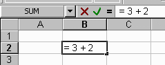
Excel that the succeeding characters constitute a formula. Following the equal sign are the elements to be calculated (the operands), which are separated by calculation operators, such as the plus sign or minus sign. For example, to add two numbers, say 3 and 2, you would type into any empty cell the following: = 3 + 2 . The image to the right shows this simple example entered into cell B2. Note the equation can be found in both the formula bar and the cell B2.
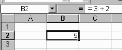
In order for Excel to perform the arithmetic, you must hit the <ENTER> key. When this is done the answer, which is of course 5, appears in cell B2. The image to the right shows the worksheet after the equation was entered. Note the result is found in cell B2, but the equation is displayed in the formula bar.
Of course you can also use Excel to perform subtraction by
substituting the plus sign (+) with the minus sign (-).
Multiplication is performed with the asterisk (*) and
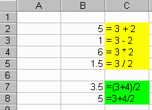
division is performed using the forward slash (/). These equations are highlighted in cells C2:C5 in the image to the right. (You may be interested to know that equations can be printed to the screen by typing an apostrophe (') before the equal sign.)Just as you learned in your math classes, formulas in Excel also calculate values in a specific order. Excel performs the operations from left to right, according to the order of operator precedence, starting with the equal sign (=). You can control the order of calculation by using parentheses to group operations that should be performed first. For example, in the image to the right, the highlighted cell C7 shows parentheses around the first part of the formula. This forces Excel to calculate the sum, 3+4, first and then divide the result by 2. Compare this to the equation in cell C8. Here there are no parentheses so the division, 4/2, is performed first then the addition is performed.
Another common operator that you will use quite often during your physics laboratory course is the exponential operator. This is used, for instance, to square a number or take the cube root of another one. You use the caret (^) to perform exponential operations in Excel. Also note that the use of parentheses is often imperative when using the exponential operator. Below are some examples using the this common operator.
| Mathematical Expression |
Excel Expression |
Result |
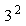 |
3^2 | 9 |
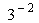 |
3^(-2) | 0.11111 |
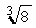 |
8^(1/3) | 2 |
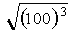 |
100^(3/2) | 1000 |
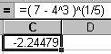
For example, the image at the right shows how to use Excel to calculate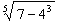
.
Click here to see a list of
all the arithmetic operators used by Excel.

Of course we do not need a spread sheet application to add, subtract,
multiply and divide; we all have calculators that do that.
However, Excel is much more than a calculator.
An Excel formula can also refer to other cells
within the worksheet. For instance, in the
example below, cells A2 and B2 display the
length and width of a piece of carpet. To determine the area
of the carpet, we can use the formula Area = (length)(width).
To do this in Excel follow these steps:
- Click on cell C2, since this is the most logical place for the result to be displayed.
- With your keyboard type the equal sign ( = )
- Either type A2 or use your mouse to click on that cell
- Type the multiplication symbol ( * )
- Either type B2 or use your mouse to click on that cell
- Press the <ENTER> key
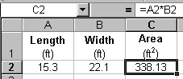
In the above example, the cell that contains the formula (i.e., cell C2) is known as the dependent cell because its value depends on the values in cells A2 and B2. Whenever a cell that the formula refers to changes, the dependent cell also changes, by default. For example, if the value for either Length (A2) or Width (B2) in the above example changes, the result of the formula =A2*B2 also changes. Try it and prove it to yourself! If you use constant values in the formula instead of references to the cells (for example, =15.3*22.1), the result changes only if you modify the formula yourself.
Microsoft Excel contains many predefined, or built-in, formulas, which are known as functions. Functions can be used to perform simple or complex calculations. The most frequently used functions are the SUM, AVERAGE and SQRT functions.
- The SUM function is used to add numbers in a range of cells.
- The AVERAGE function is used to average numbers in a range of cells.
- The SQRT function is used to take the square root of a number or an operation.
|
To add a column or a row of numbers follow the steps below:
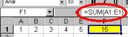
|
To average a column or a row of numbers follow the steps below:
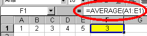
|
|
To find the square root of a number located within a worksheet cell follow the steps below:
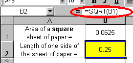
|
|
See the complete list of Excel's
built-in mathematical and
trigonometric functions and their descriptions.
If you have a question or comment, send an e-mail to
.
|
1. Terminology E |

|
3. Basic Actions F |
Copyright © 2000, Clemson University. All Rights Reserved.
This page was created by
.